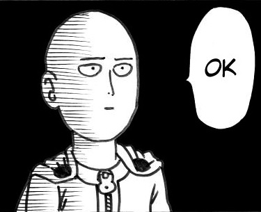

Christian Edensor "Chan" Arbon
Scripting and Integration Specialist @ NetSuiteFreelance Web Developer
Bachelor of Computer Science @ University of the Philippines, Diliman


Guess what? Just went to an awesome guy's Github IO page. I am Chan from PHL. You might wonder where the heck on my name is "Chan". It's the last syllable of my first name though.
I'm a tech savvy, gamer, an otaku and a KPop fanboy. #Nerd but not so nerdy. I work at @NetSuite, doing damyo work, shogun missions and some script and integrations codes.
I also love security and hackathons. But don't get me wrong about the hackathons, I don't mess up with people in the InterWebs coz I'm a nice guy. I do some volunteer work at times as long as I'd do coding in it and I don't get sweaty with it.
I'm a tech savvy, gamer, an otaku and a KPop fanboy. #Nerd but not so nerdy. I work at @NetSuite, doing damyo work, shogun missions and some script and integrations codes.
I also love security and hackathons. But don't get me wrong about the hackathons, I don't mess up with people in the InterWebs coz I'm a nice guy. I do some volunteer work at times as long as I'd do coding in it and I don't get sweaty with it.
I'm doing hero's job at times. Sometimes, I do the villain's job.
© One Punch Man
I surf the InterWebs a lot. Doing soul searching. No. Just kidding. I read a lot on software security, computer networks and computer visions. I also do web and mobile app development with the help of glorious InterWebs. And read all other sorts of stuff from mythology to sports to history to chemistry and physics to all other sorts of niches.
I watch anime, a lot. All running per season since 2007. Also play visual novels and all sorts of anime-based games a lot. Also read manga and light novels, a lot. Although I am more of a LANOBE guy over manga. I am a fanboy by heart and follow APink, TWICE, Secret, Miss A and AOA
I love joining hackathons and computing conferences, as well as anime conferences and concerts. I am a traveller.
If you feel bored and feel like you need to talk to someone awesome, feel free to talk to me. But make sure I'm going to think with what to wanna tell me.
Send an InMail here
Give me a Twitter mentioned: @chanabon
Send me an email @ceva1116@gmail.com or @cvarbon@upd.edu.ph.
Wanna talk over the phone or through Skype? Nah. I'll give it to you upon request via email. Ciao.
Send an InMail here
Give me a Twitter mentioned: @chanabon
Send me an email @ceva1116@gmail.com or @cvarbon@upd.edu.ph.
Wanna talk over the phone or through Skype? Nah. I'll give it to you upon request via email. Ciao.